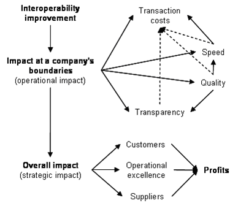

")

Interoperability impact analysis model (IIAM)
Goal
The aim of the Interoperability Impact Analysis Model (IIAM) [ATHENA B3 2006b] is to be a methodical framework to understand how interoperability creates value and, if possibly, quantify the benefits resulting form interoperability improvements. Together with the Business Interoperability Framework (BIF) the IIAM can be used to assess the impact of interoperability from a business perspective.
Description
The IIAM framework builds upon transaction costs theory and causal analysis in order to identify the resulting benefits of interoperability and understand their origin. It contains a concept to integrate IT-related costs into the general transaction costs theory and a pragmatic method to operationalise transaction costs at a firm level. The impact of interoperability on businesses is further broken down into a strategic and an operational impact. Based on the case studies, we state that interoperability acts as an improvement driver at a company’s boundaries (operational impacts). Nevertheless, the beneficial effects of interoperability at a company’s boundaries also impact the strategic positioning of the firm. We develop therefore a method to link the direct, classical, effects of interoperability with their contribution to the achievement of a competitive strategy and identify some potential interoperability impact patterns. The figure below gives an overview of the impact analysis and its main dimensions.

The operational layer of the IIAM depicts the impacts that can be directly quantified and provides therefore the basic figures initially fostering the investment decision. Transaction costs are broken into three quantifiable blocks: connectivity, coordination and monitoring costs, which are defined in the table below.
|
Transaction costs |
Definition |
Examples |
|
Connectivity costs |
nonrecurring expenses to setup or improve a business relationship |
costs of negotiation costs of setting up organizational and technical connectivity (labor costs, hardware procurement, software licence fees, external consulting fees) |
|
Coordination costs |
costs of executing the transaction |
costs of manual information processing (labor costs) costs of interacting (labor costs) infrastructure and maintenance costs (e.g. maintenance fees, communication costs) costs consequent to wrong decisions (opportunity costs) |
|
Monitoring (Control) costs |
costs to ensure the quality of the transaction |
costs of monitoring and controlling the transaction (labor costs) |
The IIAM includes a detailed questionnaire illustrating the correlations between operational key performance indicators. Given these indicators, the strategic impacts are derived (in other words their contribution to the achievement of long-term profitability). Here again, a questionnaire will enable us to understand and assess the links between interoperability actions and their consequences. These questionnaires and the application of these are further described in [ATHENA B3 2006b].
Resources
- Documentation: Deliverable D.B3.3 - Interoperability Impact Analysis Model